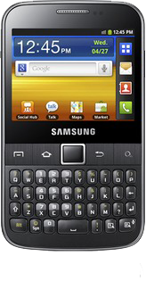

삼성 갤럭시 Y 프로
1. 외관

삼성전자가 2011년 8월에 출시한 갤럭시Y 의 파생형.
2. 사양
| 프로세서 | Broadcom BCM21553 SoC. ARM11 832 MHz CPU, VideoCore-Ⅳ VPU | ||
| 메모리 | 384 MB LPDDR1 SDRAM, 256 MB 내장 메모리, micro SDHC (최대 32GB 지원) | ||
| 디스플레이 |
2.6인치 QVGA(320 x 240) RGB 서브픽셀 방식의 TFT-LCD (154 ppi) 멀티터치 지원 정전식 터치 스크린 |
||
| 네트워크 | 기본 | HSDPA & HSUPA & UMTS, GSM & EDGE | Wi-Fi 802.11b/g/n, 블루투스 3.0+HS |
| - | - | ||
| 카메라 | 후면 200만 화소 | ||
| 배터리 | Li-lon 1200 mAh | ||
| 운영체제 | 안드로이드 2.3 (Gingerbread) | ||
| 규격 | 63.5 x 110.8 x 11.5 mm, 108.6 g | ||
3. 상세
갤럭시 Y의 쿼티모델로 슬라이드 터치 키패드가 아닌 바 쿼티 키패드를 장착했다.
한국에서는 hTC Cha Cha와 비슷한 위치에 있으며 쿼티폰 커뮤니티 등지에서 직접 해외에서 들여와서 한국에도 어느정도 물량이 있는 상태다.
여담으로 싱글심 모델인 Galaxy Y Pro보다 듀얼심 모델인 Galaxy Y Pro Duos가 한국에 더 많이 풀려있다.